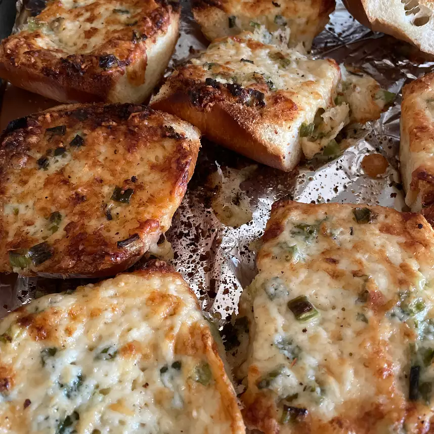

Stef's Super Cheesy Garlic Bread

Description
A delicious and cheap cheesy garlic bread sure to please the entire family and get the kids to the table!
Takes 10 minutes to cook with 10 minutes of prep time for a total of 20 minutes!
Will serve 8.
Ingredients
- 1/2 cup butter, softened
- 3/4 cup mayonnaise
- 1 bunch green onions, chopped
- 3 cloves garlic, minced
- 1 1/4 cups Parmesan cheese
- 1 1/2 cups shredded Monterey Jack cheese
- 1 (1 pound) loaf French bread, halved lengthwise
Steps
- Preheat an oven to 350 degrees F (175 degrees C)
- Combine the butter, mayonnaise, green onions, garlic, Parmesan cheese, and Monterey Jack cheese in a large bowl. Cut each half of French bread into 4 pieces. Spread the cheese mixture evenly on the bread pieces.
- Bake in the preheated oven for 8 minutes. Set the oven to broil; broil until hot and bubble, about 2 additional minutes.